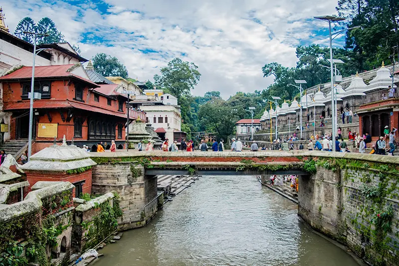
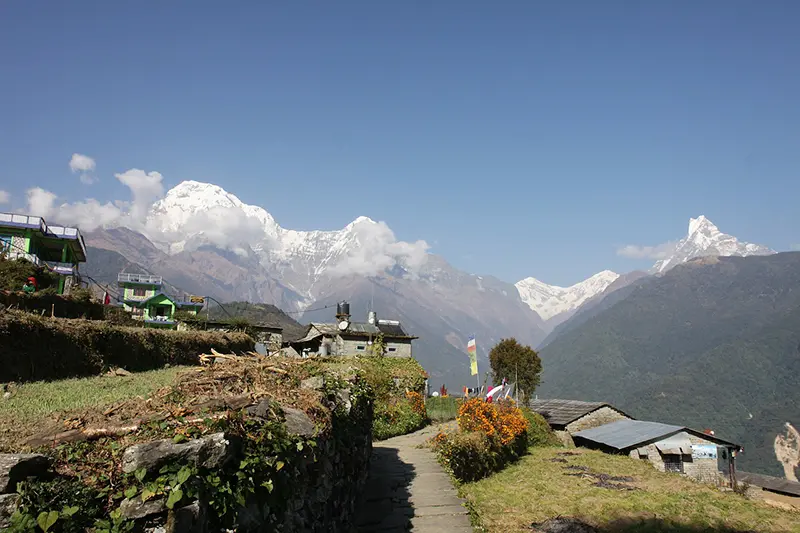
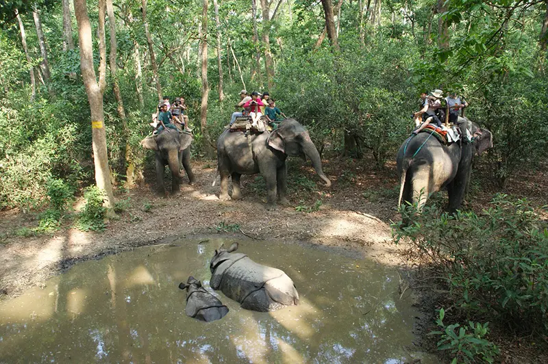

Nepal
O Nepal (oficialmente República Democrática Federal do Nepal), é um país asiático da região dos Himalaias.
Moeda: Rupia nepalesa
Pib: 36,29 bilhões USD (2021)
Pib per capta: 1.222,88 USD (2021)
população: 29,67 milhões (2021)
Idioma: nepalês/nepali
Governo: república federal parlamentarista.
História
A história do Nepal tem milhares de anos, com a ocupação da região do vale do Katmandu. Lá se desenvolveram os primeiros assentamentos humanos e foi onde teve início o ordenamento político-territorial nepalense. Alguns dos primeiros governantes do Nepal foram os Gopalas e Mahishapalas, dando lugar, no século VII a.C., ao governo dos povos Kiranis, que se estendeu até pelo menos o século IV, quando a região foi incorporada ao domínio dos Licchavi, originários da Índia.Seu período foi marcado pelo estabelecimento e crescimento das cidades e implantação de uma série de obras grandiosas, como praças e palácios, que permanecem na paisagem urbana até o presente. No campo cultural, houve a introdução de algumas das tradições ainda hoje perpetuadas pelo povo, especialmente em relação a festivais religiosos. O fim da era dos Mallas deu lugar a três diferentes reinos no Nepal, constituídos A unificação do território aconteceu com a formação do reino de Gorkha, No final do século XX, instaurou-se um sistema democrático multipartidário para a composição do Poder Legislativo, embora ainda sob uma monarquia constitucional. No ano de 1996, teve início uma guerra civil que durou dez anos e foi marcada pela oposição dos grupos rebeldes maoístas à monarquia. Uma Constituição interina foi instituída em 2007. O Nepal foi oficialmente declarado uma república democrática em 2008.
Cultura
A cultura do Nepal foi constituída ao longo dos séculos por meio da influência de diversas etnias que compõem a sua atual população. O censo demográfico mais recente realizado no Nepal identificou um total de 125 grupos étnicos (ou castas) no país. A casta mais populosa é a Chhetri, que compreende 16,6% da nação e é a segunda mais elevada em termos de hierarquia. O hinduísmo é a religião com o maior número de adeptos no Nepal e, além da organização social, delineia a maior parte das tradições nepalenses, como no caso dos feriados e festivais. O principal festival hindu do Nepal é chamado Dashain, celebrado entre os meses de outubro e setembro. Destaca-se ainda a presença do budismo, que é a religião seguida por 9% da população do Nepal. A história dessa religião está diretamente ligada ao país, que foi o local de nascimento do primeiro Buda, Siddhartha Gautama, em 563 a.C.
Política
O Nepal é uma república federal parlamentarista. O chefe de Estado e máximo representante do Poder Executivo é o presidente da república, enquanto o primeiro-ministro desempenha a função de chefe de governo. Ambos são eleitos de forma indireta, ou seja, sem votação popular. O órgão do Poder Legislativo é o Parlamento Federal, composto pela Assembleia Nacional e pela Casa dos Representantes. Enquanto os 59 membros da primeira são eleitos indiretamente, eleições populares são realizadas para a escolha dos 275 membros da Casa dos Representantes. O Governo provisório de Katmandu e a guerrilha maoísta assinaram dia 21 de novembro de 2006, na capital nepalesa, um importante acordo político que põe fim a dez anos de guerra civil. O texto foi assinado pelo chefe do Governo, Girija Prasad Koirala, e o líder maoísta, Pushpa Kamal Dahal, conhecido por presidente Prachanda, numa cerimónia transmitida pela televisão a que assistiram a generalidade da classe política do Nepal e a maioria das representações diplomáticas acreditadas no país. Do acordo resulta a integração de representantes maoístas no Governo e no Parlamento interino, o acantonamento da guerrilha, que se transforma em partido político, e a redução do número de efectivos do exército. Estão também marcadas eleições, em Junho de 2007, para uma Assembleia Constituinte que deverá pronunciar-se sobre o futuro da monarquia como forma de regime no Nepal.
Pontos turísticos
Catmandu
Capital do Nepal, é onde começa a maioria das viagens pelo país: a maior parte dos voos internacionais aterrissam na cidade. Com atrações que vão desde festivais tradicionais a modernas apresentações de música e arte reunidas, especialmente no bairro mais turístico da cidade, o Tamel. A história da cidade de Catmandu é inseparável da do vale de Catmandu e remonta a tempos antigos. Escavações realizadas em Hadigaon e Lubhu, na parte sul do vale, em Catmandu, desenterraram paredes de tijolos e ferramentas da Idade da Pedra.
Região do Annapurna
Caminhada mais famosa do Nepal, que atrai a maior parte dos trilheiros de plantão, o Circuito Annapurna não deixa a desejar. Ao fazer o circuito completo, é possível deparar-se a cada dia com um cenário diferente, passando de verdes gramados a rochosos e áridos terrenos em poucas horas: tudo sob a vista imponente dos Himalaias. É possível fazer apenas trechos do circuito ou completar o percurso inteiro, o que leva em média três semanas. Diversas pousadas e tendas de chá são encontradas nos vilarejos, o que garante hospedagem e alimentação para quem deseja se aventurar no trajeto.
Monte Everest

Conhecido por abrigar o Monte Everest – o ponto mais alto do planeta – o Nepal é um destino turístico para quem está em busca de aventura e adrenalina. Além de ter em seu território a maior montanha do mundo, o país também é rico em história, cultura e belezas naturais de tirar o fôlego.
Parque Nacional de Chitwan
Localizado ao sudeste de Catmandu, a maior reserva nacional do Nepal encontra-se em áreas baixas, propiciando aos visitantes experimentar um clima bastante diverso daquele que pode ser encontrado em outras regiões. Aqui, o clima tropical domina, assim como a fauna e a flora: no parque, é momento de encarnar um safári.